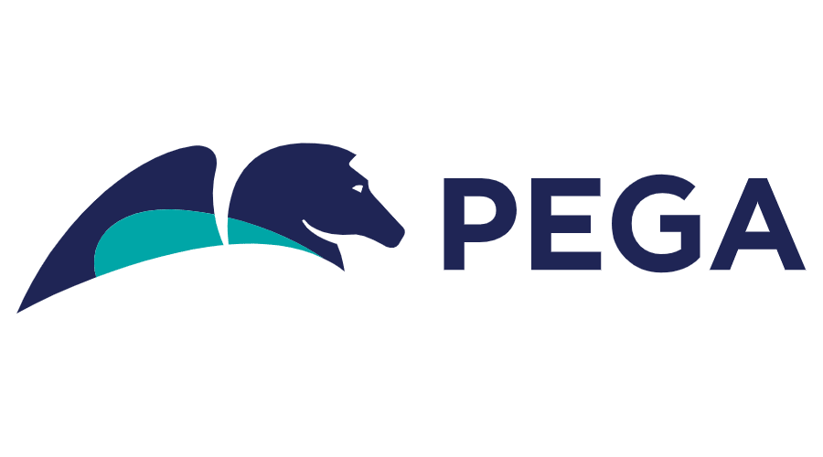

Full Stack Software Engineer Creative Designer OCR Athlete
More About MeI have a Bachelor of Science degree in Mathematics, with additional curriculum in computer science. I'm a highly energetic, motivated individual interested in developing my skills as a software engineer, particularly in web development. My skills extend to algorithm design and mathematical computation.
I am a US Citizen, based in Boston MA.
My skillset lies in full stack web development.
Frontend: ReactJS
Backend:NodeJS, Springboot
Database: MySQL, SqlServer, MongoDB
My professional work experiences consist of college internships and my first full time job at John Hancock as a Full Stack Software Engineer
February 2017 - CURRENT
I am a part of a Software Engineer Development Program. I am placed in yearly rotations within the company for 3 years, culminating in my choice of which division to pursue after that.
May 2017 - August 2017
I was placed on the DevOps team. My responsibilities included creating logistical dashboards using the Dashing.js framework to convey data about the products current build status. The front end was built using Ruby and SCSS, and the the database used was MongoDB. Experimented with the Capital One Hygieia Framework as an alternative framework to use for dashboards
May 2015 - December 2016
I was placed on the web development team, creating custom web apps for their internal use. This included an app for jurors to order food from the cafateria, a form for judges to reassign cases, and an app for the chief clerk to monitor and assign parking spots. All of the websites were RESTful, using AngularJS for the front end, NodeJS for the backend, and MySQL as the database.
September 2014 - May 2018
I was a part of the marketing team, meaning my job ranged from creating flyers using Photoshop to videos using Sony Vegas to attending events to better understand how to advertise for them. If there was any computer problems that arose, I dealt with them as well. I created a total of 12 flyers and 8 videos.
September 2013 - May 2018
Major: Mathematics, Concentration in Mathematical Computation
Minor: Information Technology
Achievements: Gerald F Scanlon Student Employee of the Year Award, CMASS Unsung Hero/Quiet Influence Award, Hack UMass finalist, Dean's List
September 2007 - June 2013
Achievements: 2013 AP Scholar, Honor Roll Recipient all 6 years
Extracurricular: First Robotics competitor, Breakdancer, Math club competitior, Asian Culture Club
If life is a journey of a million steps, then I feel like I've only taken my first few steps. From going to tech events to Spartan Races to traveling the world, I'm living my life to its fullest potential, and learning all I can along the way
I have obtained a large set of skills from my experience in school, my internships, and learning during my free time. I am always open to learning new things, because the world is constantly changing. Here are some of the ways I help you.
I have experience doing full stack web development. For front end, I am efficient with React, with Redux for state management. For back end, I am efficient with Node.js and Springboot. For databases, I am efficient with MongoDB, mySQL, and SqlServer.
I have an intense love for mathematics, especially equations that model the real world in any way. This translates to my strength in creating algorithms and data structures to fit a product's needs. I can be a great asset to anybody looking for a high level logical thinker
I love to be creative, and one of the ways I know best to show this is with graphic design. I am experienced creating flyers for events, custom graphics such as logos, and editing photographs. I understand the importance of advertising through these ways, and I always make sure to present quality work.